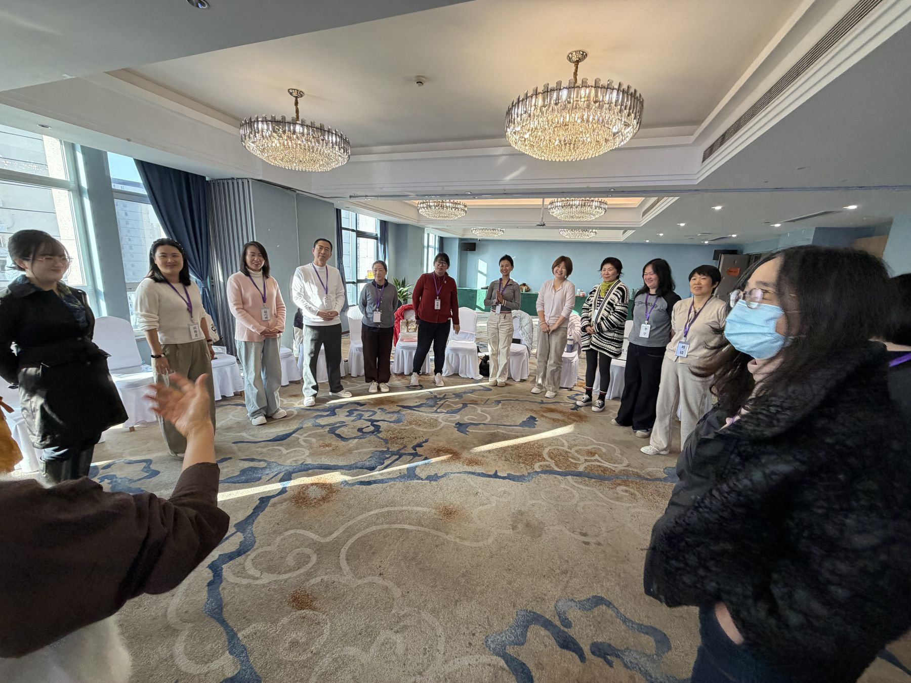
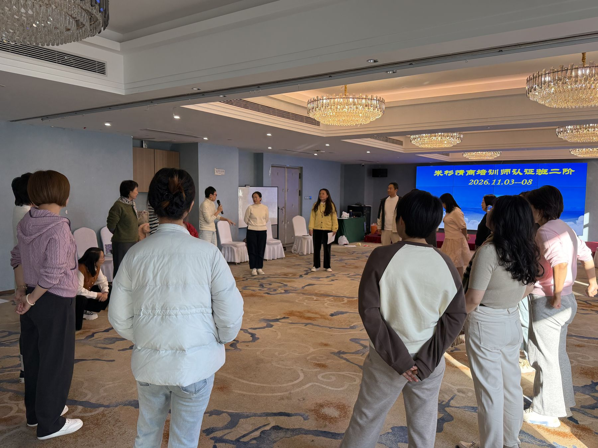

COURSE FOUNDER
Michel Claeys Michel Claeys Bouuaert
Belgian psychotherapist and founder of Essence Therapy. His long-standing work in emotional education, counseling and experiential training shapes the course and its teaching.
Meet Michel Claeys ↗EQ TRAINERS · A SHARED PRACTICE
Growing from two training stages in Beijing, the alliance brings emotional awareness, communication and experiential education into classrooms and groups.
THE COMMUNITY
The 2026 Beijing trainer course had two stages. Level I in August focused on personal experience and observing teaching methods. Level II in November moved toward participant-designed, participant-led sessions. The team is now discussing with members how to continue this work in education, family and group settings.
The alliance continues this shared learning. It draws on real classroom experience, reflects on practice and develops more mature ways of facilitating through collaboration.
FROM THE CLASSROOM
Experiencing, observing, designing and facilitating form a continuous learning process.




PEOPLE IN PRACTICE
Teaching and classroom practice meet as facilitation skills develop through repeated design and feedback.
Belgian psychotherapist and founder of Essence Therapy. His long-standing work in emotional education, counseling and experiential training shapes the course and its teaching.
Meet Michel Claeys ↗
Ni Nanqi has long translated and introduced Michel's books in Chinese and collaborated on courses, connecting the written method with Chinese learning settings while continuing to teach Essence Therapy.
Get to know Ni Nanqi ↗In Level II, 22 participants each designed and led a themed session of about 90 minutes. Their themes ranged from recognizing emotions to close relationships, family, trust, cooperation and self-connection. Different professional experiences met and challenged one another in the same classroom.Meet the 22 classroom facilitators ↗
Recognizing feelings, needs and bodily signals.
Practising communication in close relationships and groups.
Helping participants experience support and co-creation through activities.
Exploring parenting, life stages and responsibility.
THE PEOPLE · BEIJING 2026
Over six days, each participant designed and led a classroom activity around a chosen theme.

Word games and cooperative exercises invited the group to notice communication, shared tasks and mutual support.
Free movement and a trust circle helped participants explore bodily experience and trust in a group.
Blindfolded name calling and other exercises explored how trust gradually forms among peers.
Read the community report ↗Association and interactive activities invited reflection on expectations and differences in close relationships.
The session began with bodily experience to identify emotions and practise relaxation under stress.
Slow movement and group interaction explored how trust is felt and changes in relationships.
Finger movements and image observation helped distinguish what is seen from the judgments that follow.
Read the teacher training report ↗Group activities invited participants to notice how inner shoulds and expectations shape their choices.
An emotional weather report opened a conversation about feelings and underlying psychological needs.
Group games and discussion explored how people express and hear their own needs.
Interactive exercises helped distinguish observation, interpretation and judgment.
Emotion cards and everyday scenarios supported the practice of recognizing feelings and reconnecting with oneself.
Breathing, drawing and body sculpture became ways to explore connection with self and others.
Read the university lecture notice ↗The session explored felt tension in family relationships through experiential activities.
Mindful tasting and slow walking opened a path toward self-care and connection with others.
A circle of appreciation and writing exercises helped participants identify support and personal resources.
Group games such as finding an animal family explored cooperation, roles and shared tasks.
Silence, breathing and wordless cooperation made room for inner awareness.
Life journeys and significant moments offered a way to revisit experiences and resources for growth.
Sound, movement and silent walking helped explore relationships through bodily experience.
The life course provided a lens for exploring needs and resources across stages of development.
Activities and discussion examined the different choices associated with a victim mindset and a responsible one.
WORK IN PROGRESS
Learning continues in different forms. Each project begins with real participation and a clearly observed need.
Drawing on Level II facilitation, the group is organizing session designs, observations and feedback to keep refining classroom practice.
Invite willing members to share their learning paths, professional backgrounds and facilitation experience so that different practitioners can be heard.
The group is researching the distinct needs of parents and young people and co-designing experiential activities. Format and timing are still being developed.